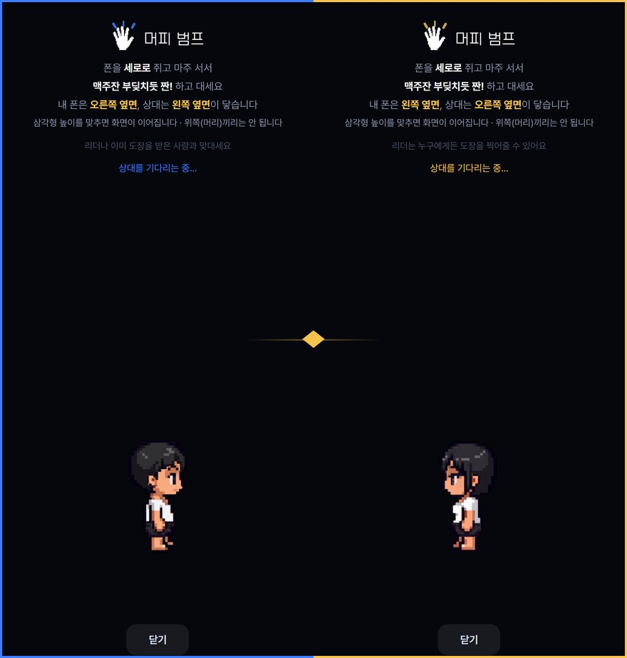

근방단 운영진용
출석은
머피 범프로 받습니다
운영진이 할 일은 두 가지입니다. 입금 확인하고 승인, 그리고 폰 맞대주기.
왜 바꿨는지부터
QR을 헬스장마다 부탁드리는 부담도 있었지만, 운영진 입장에서 진짜 달라지는 건 자리를 누가 차지하느냐입니다.
기존 소모임
아무나 참석 버튼 → 승인 없이 바로 자리 차지 → 입금은 그다음
참가 의지도 입금도 확인 안 된 사람이 먼저 자리를 먹습니다.
정원은 찼는데 실제로 올 사람은 몇인지 모르는 상태가 됩니다.
지금 (머피)
단톡방 링크 받은 사람만 신청 → 입금 확인 → 운영진이 승인 → 자리 확정
참가 의지가 있고 입금까지 한 사람만 자리를 가져갑니다.
승인 전에는 명단에 안 올라가니 정원이 헛돌지 않습니다.
그리고 이 기록은 우리 앱 안의 데이터입니다.
나중에 근방단 출첵 앱과 연동해서 출석·공금을 한 곳에서 보는 것도 가능합니다.
운영진이 하는 일
01운영진으로 임명받기
벙주가 운영진 임명에서 체크해 줍니다. 임명되면 이름 옆에 핑크 왕관이 붙습니다.
(벙주는 황금 왕관입니다.)
운영진이 되면 승인·내보내기·출석 찍어주기를 전부 할 수 있습니다.
벙주 혼자 20명을 감당할 수 없어서 만든 권한입니다.
스쿼드 상세 → 스쿼드 멤버 칸 오른쪽 운영진 임명
02입금 확인하고 승인
이게 핵심입니다. 참가 신청이 들어오면 승인 대기 칸에 쌓입니다.
입금이 확인된 사람만 승인해 주세요. 승인하면 그때 명단에 올라갑니다.
승인은 파란 손잡이를 오른쪽 끝까지 미는 방식입니다.
실수로 눌리면 안 되는 일이라 한 번 밀도록 했습니다.
스쿼드 상세 → 승인 대기 N명 칸 → 손잡이를 오른쪽으로
입금 확인은 상단 입금 N/M을 누르면 누가 냈는지 다 보입니다
입금 안 된 사람은 승인하지 마세요
승인 전에는 정원을 차지하지 않습니다. 급하면 나중에 승인해도 되고,
아닌 사람은 ✕로 내보낼 수 있습니다.
03현장에서 폰 맞대주기
참석자가 오면 폰을 세로로 쥐고 맥주잔 부딪치듯 짠! 하고 대면 출석 완료입니다.
한 사람당 3초입니다.
운영진 여러 명이 동시에 찍어줄 수 있습니다. 벙주 앞에 줄 서지 않아도 됩니다.
보이는 사람마다 바로 맞대주시면 됩니다.

양쪽 다 범프로 출석을 누르면 이 화면이 뜹니다 ·
파란 테두리가 참석자, 노란 테두리가 운영진
가운데 빛이 맞닿는 쪽 옆면끼리 부딪히면 됩니다
양쪽 폰에 동시에 출석이 찍힙니다 · 시각차가 ms 단위로 남아요
스쿼드 상세 → 범프로 출석
현장에서 막히면
닉네임을 이상하게 적고 들어온 사람이 있어요
누군지 확인하고 승인해 주세요. 출석부에 그 이름으로 올라갑니다.
정 모르겠으면 본인에게 물어보시고, 아니면 ✕로 내보낼 수 있습니다.
"동작 센서를 켤 수 없어요"가 떠요
카카오톡 안에서 열어서 그렇습니다. 그 화면의 기본 브라우저로 열기를 누르면 됩니다.
범프가 안 잡혀요
두 폰을 세로로 쥐고 옆면끼리 부딪혀야 합니다. 위쪽(머리)끼리는 안 됩니다.
한 번 더 세게 짠! 해보시면 대부분 잡힙니다.
가입 안 한 사람은요?
가입 안 해도 됩니다. 링크 → 가입 없이 바로 입장 → 닉네임만 적으면
출석까지 다 됩니다. 나중에 계정을 만들면 그날 기록이 그대로 따라갑니다.